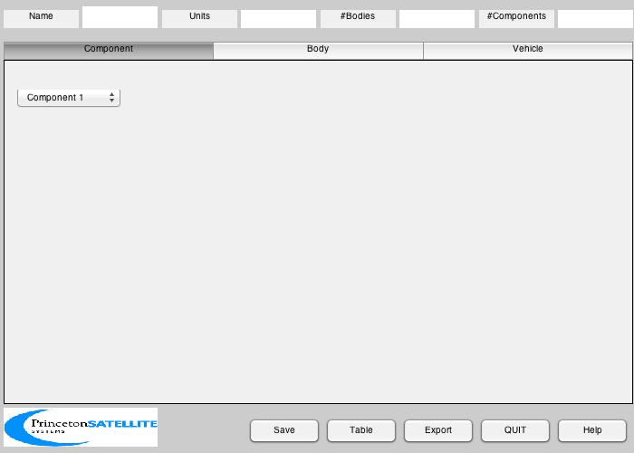
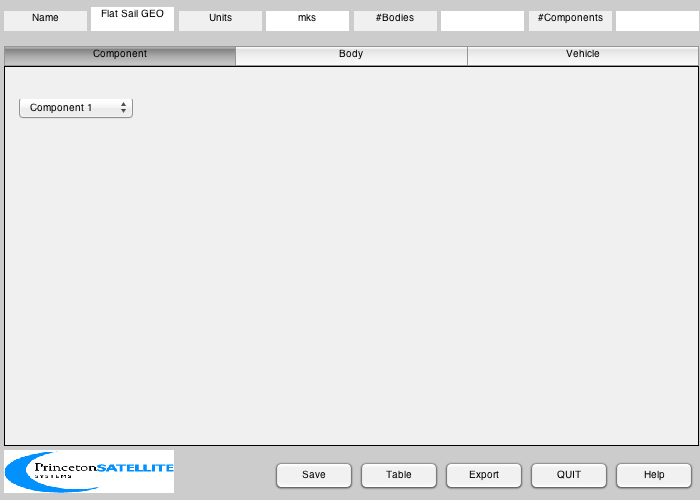
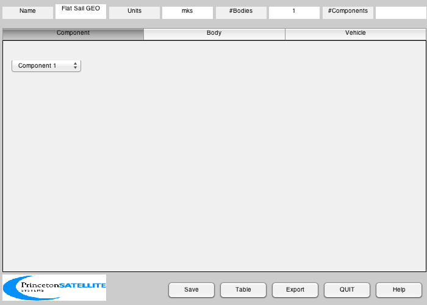
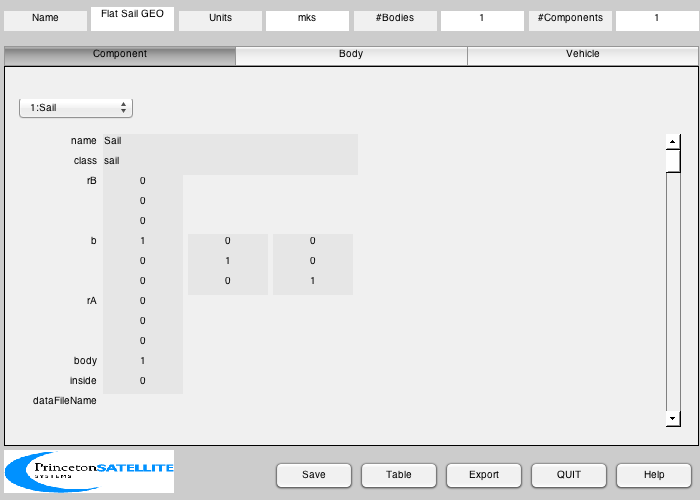
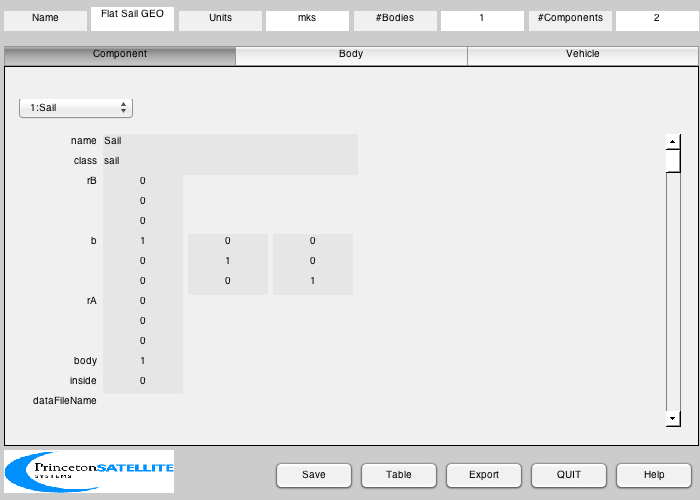
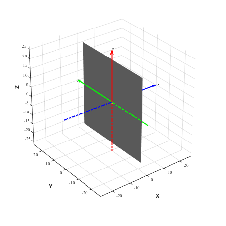

A flat, specular sail for GEO simulations.
The vertices and faces for a simple square are defined by hand.
Since version 7.
------------------------------------------------------------------------
See also BuildCADModel, CreateBody, CreateComponent, DrawSCPlanPlugIn,
Inertias, FindDirectory, SaveStructure, AddAxes
------------------------------------------------------------------------
Contents
Script control
createFiles = 1;
Properties
sailWidth = sqrt(2000);
sailMass = 50.0;
massBus = 450;
Create the sail mass structure
inertiaSail = Inertias( sailMass, [sailWidth sailWidth], 'plate', 1 );
bXToZ = [0 0 -1;0 1 0;1 0 0];
massSail = struct('inertia', bXToZ*inertiaSail*bXToZ', 'mass', sailMass, 'cM', [0;0;0] );
Initialize
BuildCADModel( 'initialize' );

Add general properties
BuildCADModel( 'set name' , 'Flat Sail GEO' );
BuildCADModel( 'set units', 'mks' );

Create CAD bodies first
Core
m = CreateBody( 'make', 'name', 'Core' );
BuildCADModel('add body', m );

This creates the connections between the bodies
BuildCADModel( 'compute paths' );
Create CAD Components second
Sail
v = [0 0 0 0;0.5 -0.5 -0.5 0.5;0.5 0.5 -0.5 -0.5]'*sailWidth;
m = CreateComponent( 'make', 'sail','name','Sail','body',1,...
'mass', massSail, 'faceColor', 'mirror','rA',[0;0;0],...
'sigmaS', [1 1], 'sigmaD', [0.0 0.0], 'sigmaA', [0.0 0.0], 'emissivity', [0.3, 0.3],...
'vertex',v ,'face', [1 2 3; 1 3 4], 'inside', 0 );
BuildCADModel( 'add component', m );

Spacecraft
m = CreateComponent( 'make', 'box','name','Bus','body',1,...
'mass', massBus, 'faceColor', 'gold foil','rA',[0;0;0],...
'x', 1,'y', 1, 'z',1, 'inside', 1 );
BuildCADModel( 'add component', m );

Export
if( createFiles )
g = BuildCADModel( 'get cad model' );
cd(FindDirectory('SailData'));
SaveStructure( g, sprintf('SailGEO_%d',massBus) );
end
3D View
DrawSCPlanPlugIn( 'initialize', g );
AddAxes(0.6*sailWidth,[],[],gcf)
ans =
Figure (2: 3D Vehicle Plan) with properties:
Number: 2
Name: '3D Vehicle Plan'
Color: [1 1 1]
Position: [500 320 460 460]
Units: 'pixels'
Use GET to show all properties
